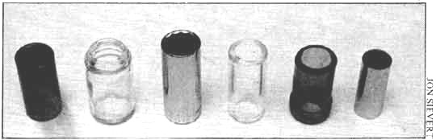
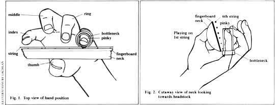
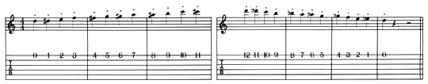
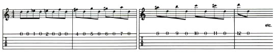
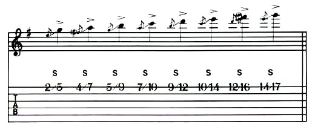
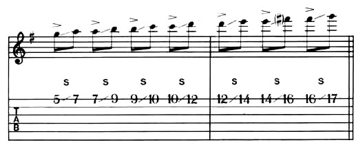
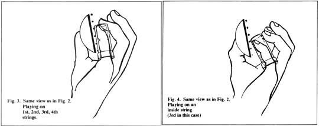

|
Основные приемы игры слайдом:
развитие умения играть чисто.
Автор статьи - Боб Брозман.
Перевод Арсена Шомахова.
Почти каждый гитарист, кого я встречал, восторгается звуком слайда.
Однако для множества музыкантов техника характерная для этого уникального
стиля остается загадкой. Нижеприведенные правила и упражнения чрезвычайно
важны для того, чтобы научиться играть слайдом чисто, аккуратно и быстро.
Они позволят вам избежать неэффективного метода проб и ошибок.
Зачем играть слайдом?
За исключением приема "бенд", не существует иного способа извлекать ноты
"между" ладами. Не существует и никакого другого способа добиться певучего,
похожего на голос звука, а также сустейна, характерного для слайда. Звук
очень тесно связан с типом слайда, который вы используете.

на фото (слева направо): толстый латунный слайд из магазина, баночка
для лекарств (у Дуэйна Оллмана была такая же, но подлиннее), покрытое
хромом гнездо для свечи зажигания, стеклянный слайд из магазина,
изготовленный вручную боттлнек зеленого стекла, металлический слайд
из магазина.
Хотя слайды продаются в магазинах, я предпочитаю слайды, сделанные из
горлышка винной бутылки (толщина стенки, по крайней мере, 1/8 дюйма),
потому что их вес хорош для игры вибрато, а поверхность очень гладкая,
отчего струны шумят значительно меньше). Хотя разные музыканты используют
разные пальцы левой руки для игры слайдом, я бы порекомендовал использовать
мизинец. Это даст возможность использовать свободные 3 пальца для ладовой
игры и для приглушения нежелательного шума струн (больше на эту тему
попозже). Из бутылки вина Матеус получаются самые лучшие слайды. Матеус -
не самое лучшее из существующих вин, но его бутылка имеет редкое длинное
горлышко, достаточно прямое (без расширения) чтобы использовать его для
игры на гитаре. В продаже имеются стеклянные слайды, которыми вполне можно
пользоваться, но они не достаточно тяжелые и соответственно ими сложнее
играть (чем тяжелее слайд, тем лучше звук и тем легче контролировать игру).
Самая сложная часть в изготовлении хорошего стеклянного слайда это
обрезание горлышка - иногда его приходится просто откалывать. Стеклорез или
ножовку можно использовать для того, чтобы сделать бороздку, перед тем как
отколоть горлышко, а затем подровнять неровные края косыми острогубцами.
(Осторожно: когда откалываете стекло, обязательно предохраняйте глаза от
мелких осколков защитными очками.)
Как только горлышко отделено от бутылки (желаю удачи - приготовьтесь
испортить несколько бутылок), место откола необходимо гладко зашкурить.
Поскольку этот процесс может занять несколько часов, возможно, вам удастся
попить вина. Точильный круг и ванночка с водой лучше всего подходят для
завершающей полировки, но помните, что использовать ванночку с водой
необходимо - это уменьшит трение и защитит от осколков. Очень важно
сделать кромку (ту, что была отколота) круглой и гладкой.
Когда вы закончите изготовление боттлнека, примерьте его на палец. (Я
предпочитаю слайд такой длины, чтобы он полностью покрывал мизинец).
Боттлнек будет свободно сидеть на пальце, так что вам придется удерживать
его, изогнув мизинец, что поможет придать руке правильную полукруглую
позицию, для приглушения струн пальцами левой руки. (рис.1)
Прикосновение к струнам
Около 80% игры боттлнеком приходится на первую струну, так что начнем с
нее. Держите руку в полукруглом положении и поставьте слайд на 5 лад первой
струны. (Помните, чтобы играть без фальши, надо располагать слайд прямо над
ладами; если вы задумаетесь, как извлекаются ноты на гитаре, вам станет
понятно, что именно лады, а не пальцы определяют длину струны и высоту
звука) Как только вы определили, где располагается нужная нота,
прикоснитесь слайдом к струне. Не прижимайте! В то же время, позвольте
нижней часть указательного пальца левой руки слегка прикасаться к струне
позади слайда. Это приглушает струны и отсекает посторонние шумы, позволяя
вам добиться чистого, без призвуков звука.

Рис.1. Положение левой руки. Вид сверху.
Рис.2. Вид на поперечный разрез грифа.
Начинаем играть
Первое что надо сделать, когда вы установите слайд над 5-м ладом -
медленно поскользить вниз и вверх по струне. Слушайте звук, который
получается, и постарайтесь довести плавность и звук до максимума, слегка
меняя положение руки. Очень важно чтобы рука со слайдом была абсолютно
расслаблена! Кроме того, обратите внимание, как игра правой руки влияет на
звук, в зависимости от того, насколько близко или далеко от порожка вы
извлекаете звук. После того как вам станет комфортно медленно играть
слайдом вниз и вверх по струне, можно переходить к простым упражнениям.
Поскольку весь следующий материал затрагивает только первую струну, он
применим к любой настройке гитары. В добавление к сказанному, я советую
использовать инструмент с верхними струнами средней толщины, и с высотой
струн не ниже 1/8 дюйма над 12-м ладом. В противном случае вы будете
страдать от посторонних призвуков, незвучащих нот, и от плохого соотношения
"сигнал/шум". Вот несколько распространенных вариантов настройки гитары, с
которыми можно поэкспериментировать: для игры на электрогитаре я рекомендую
строй Ля (Е А Е А С# E, от нижней к верхней) и строй Ми (E B E G# B E от
нижней к верхней); поскольку эти тональности очень часто используются в
роке и блюзе. Для игры на акустике рекомендую строй Соль (D G D G B D, от
нижней к верхней) и строй Ре ( D A D F# A D, от нижней к верхней). Сам я
использую более низкий строй, поскольку натяжение струн выше стандарта
оказывает нежелательное давление на деку и гриф инструмента. Поскольку
строй Соль очень широко используется и позволяет играть фразы,
ассоциируемые с кантри блюзом, этот строй лучше всего подходит для
акустической игры.
От звуков к музыке.
При игре слайдом звук и тембр наиболее важны; фразировка - следующий
этап. Приведенные далее упражнения разработаны с целью развития хорошего
звукоизвлечения и игры без фальши. Хотя используется только первая (Ре)
струна, можно достичь совершенного контроля в игре, путем многократного
проигрывания этого упражнения и на остальных пяти струнах.
Чистое стаккато.
В среднем темпе, играйте очень короткие чистые ноты, начиная от 1-го к
12-му ладу и обратно. Приглушайте струны указательным пальцем левой руки, в
то время как вы приподнимаете и опускаете слайд над каждым ладом. Цель - не
допустить постороннего шума, приподнимая и опуская боттлнек.

Чистое стаккато.
Поочередная игра стаккато/открытая струна.
Играйте так же короткими чистыми нотами, как и в предыдущем примере, но в
этот раз приподнимайте слайд и приглушающий палец, чтобы сыграть на
открытой первой струне между этими нотами. Здесь важно аккуратно
приподнимать и возвращать на прежнее место кисть руки (слайд и приглушающий
палец), удерживая ее все в той же форме полукруга. Следите за правильным
извлечением нот, пытаясь не производить посторонних шумов.

Поочередная игра стаккато/открытая струна
Игра гамм слайдом.
Здесь вы должны попытаться играть чисто, аккуратно и осмысленно. Скользите
слайдом от заданного места к каждой ноте, и точно извлекайте следующий
звук. Хотя полезно глазами следить за левой рукой, в тот момент, когда вы
уверенно овладеете техникой, игра не глядя поможет вам более сосредоточенно
слушать. Упражнение нужно усложнять, играя слайдом понижение к каждой ноте.

Игра гамм слайдом
Извлечение ноты и скольжение.
Здесь надо начинать с ноты соль на пятом ладу и скользить к следующей ноте.
Следите за длительностями. Это упражнение также очень полезно для развития
умения играть в ритме, без фальши и аккуратно.

Извлечение ноты и скольжение
Длинные прыжки. Последовательно играя ноты аккорда G7 на первой
струне, вы учитесь покрывать левой рукой значительные расстояния. Это
сложно играть чисто, и нужно упражняться двумя способами: играя стаккато и
скольжением к каждой ноте. Чем больше вы будете упражняться, тем более
подготовлены вы будете к различным ситуациям в игре.
Длинные прыжки.
Вибрато заставляет слайд петь. Вибрато - это дрожащий, длительный поющий
звук, характерный для игры слайдом. Лучше всего начинать учиться этому
важному приему на первой струне. Вибрато достигается быстрым движением
слайда влево-вправо от нужной ноты. Однако на практике это происходит
неосознанно. Кисть вашей руки и слайд должны как бы свисать под своей
тяжестью, опираясь на большой палец левой руки, прижатый к грифу. Он
создает опору для движения влево - вправо. Лучше всего можно описать прием
вибрато, сравнив его с тем, как вы дразните кого-то, покачивая перед его
носом тарелочкой с желе. Рука со слайдом должна двигаться очень мягко,
медленно, расслабленно, не оказывая чрезмерного давления на струну.
Потребуется некоторое время, чтобы развить навык игры этим приемом, так что
запаситесь терпением.
Диапазон вибрато: больше чем пол-лада вниз от основной ноты. Если
сделать повышение от основной ноты, будет звучать неправильно. Скорость
вибрато варьируется, но должна быть достаточно медленной, чтобы играть
расслабленно. Если мышцы кисти вашей руки напряжены, ваша игра будет
звучать так же напряженно. Требуется время, чтобы научиться играть
равномерное, расслабленное вибрато, но без умения играть этим приемом вы
можете с тем же успехом просто играть пальцами левой руки.

Рис. 3: Тот же вид, что и на рис.2.
Игра на 1-ой, 2-ой, 3-ей и 4-ой струнах
Рис.4: Тот же вид, что и на рис.2.
Игра на "внутренней" струне (в данном случае на 3-ей).
Как насчет других струн?
Аккорды для основной блюзовой схемы I IV V можно легко играть в
открытом строе СОЛЬ (точно как ЛЯ, только на тон ниже) покрывая слайдом три
(или более) струны одновременно. Например, первые три открытые струны,
также как и три струны на двенадцатом ладу дают аккорд СОЛЬ (тоника или
аккорд I ступени). Первая струна - это пятая ступень аккорда СОЛЬ, вторая
струна - третья ступень, а третья струна - тоника. На пятом ладу те же три
струны дают аккорд ДО мажор (IV), а аккорд РЕ можно сыграть на 7-ом ладу
(V). Можно также добавлять четвертую струну (пятую ступень аккорда) и пятую
струну (тоника). В буквальном смысле тысячи блюзовых песен состоят только
из аккордов I IV V.
Чтобы извлекать отдельные ноты на других струнах, вам нужно изменить
угол наклона боттлнека (продолжая приглушать струны). На рис. 1, 2 и 3
видно три угла позволяющие вам играть только на первой струне, на
нескольких струнах одновременно (до шести), и на отдельной "внутренней"
струне соответственно. Приглушение струн при комбинировании всех этих
позиций задача не из легких, но, все-таки, выполнимая. Играя слайд на
нескольких струнах, используйте всю длину указательного пальца для
приглушения струн. Играя на одной внутренней струне, используйте кончик
указательного пальца для приглушения.
Не могу не сделать ударения на том, насколько важно хорошо изучить гриф,
чтобы хорошо играть в разных строях. И не забывайте, что вы можете
использовать указательный, средний и безымянный пальцы левой руки для
ладовой игры. Существует множество уникальных сочетаний голосов в
аккордах, которые можно извлечь только в этих строях, и которые заслуживают
изучения. Мне кажется, наиболее интересная игра слайдом в открытых строях
характерна для кантри блюз гитаристов, таких как Роберт Джонсон, который
одинаково использовал игру пальцами и слайдом. Кроме того следует слушать
таких замечательных гитаристов использовавших боттлнек как Мадди Уотерс,
Тампа Ред, Сон Хаус, Лоуэлл Джордж, Дуэйн Аллман, Бо Уэвил Джексон, Кокомо
Арнольд и Букка Уайт. Если будете слушать до тех пор, пока звуки не
польются у вас из ушей, будет значительно проще извлекать эти звуки
руками.
Подводя итог, позвольте мне еще раз повторить мысли, связанные с игрой
слайдом: выбирайте правильную позицию руки и играйте расслабленно насколько
возможно. Играйте главным образом на первой струне в течение недели или
около того, пытаясь добиться жирного, мягкого, без призвуков звука, без
ударов слайда по грифу и ладам. Позвольте своей руке свободно свисать под
собственной тяжестью, опираясь на большой палец, упертый в заднюю часть
грифа, и производя рукой и слайдом вибрато. Не принуждайте свою руку
двигаться взад - вперед, лишь слегка покачивайте ею, как желе на тарелке.
Пробуйте играть каждую ноту под разными углами. Научитесь скользить вниз и
вверх к определенной ноте, добиваясь различных оттенков звучания. Играйте
расслабленной рукой и не забывайте: чтобы играть без фальши нужно брать
ноты над ладами. Не думайте, что сможете овладеть этим стилем за день -
быстрых путей нет. Играйте и слушайте до тех пор, пока игра слайдом не
будет получаться так же естественно, как пение в ванной комнате.
Боб Брозман - www.bobbrozman.com
Перевод Арсена Шомахова.
Slide Guitar Basics: Developing Clean Technique. - оригинал статьи.
© Bob Brozman 1984, 2004
Материал публикуется на сайтах Blues.Ru, BluesGuitar.Ru с любезного разрешения
Боба Брозмана. Использование материалов без согласования с Брозманом запрещено.
|
|